La Valle d'Aosta in dettaglio
NOTA: questa pagina è incompleta. Alla raccolta mancano 5 dei 17 fascicoli accertati della regione — Aosta, annate 81/82–83/84; Valle d'Aosta, annate 91/92 e 94/95 — e i dati che dipendono dall'esame diretto dell'esemplare sono segnati in sospeso. Le copertine non reperite sono sostituite da un segnaposto; nella griglia dei comuni le annate scoperte portano una croce e non una casella vuota, per non confonderle con la reale assenza del corrispondente comune in cartografia. Per la stessa ragione questa pagina non è annunciata altrove nel sito e per il momento vi si arriva soltanto per indirizzo diretto.
Questa pagina si occupa di definire con estrema precisione l'organizzazione interna dei fascicoli dell'intera regione Valle d'Aosta.
Il censimento registra un totale di 17 fascicoli e 5 comuni cartografati.

In questa pagina
Tabella dei fascicoli
I fascicoli della Valle d'Aosta appartenevano alla serie iniziale: il primo fascicolo, edito a [dato mancante], era infatti intitolato TuttoCittà 81.
Una particolarità è che tutti i fascicoli della serie sono bilingui: poiché le lingue ufficiali della Valle d'Aosta sono l'italiano e il francese, i fascicoli presentano tutte le sezioni raddoppiate, una per ogni lingua: due sommari, due rubriche dei numeri utili, due rubriche di articoli, con tutti gli articoli presentati nelle due lingue, due elenchi delle vie. I fascicoli 81, 82 e 83 presentano inoltre anche due titoli: "TuttoCittà" in intestazione e "ToutVille" a pie' di pagina; anche la didascalia era tradotta: "una guida utile e completa della tua città" in intestazione e "un guide utile et complet de votre ville" a pie' di pagina, senza accenti.
Un'altra particolarità è che dall'edizione 1990/91 il fascicolo si intitola non più Aosta ma Valle d'Aosta. È inoltre presente il titolo anche in francese (senza accenti) Vallee d'Aoste.
Alla fine degli anni '90 la pubblicazione dei fascicoli cessò per tutte le province.
La seguente tabella censisce i dati fondamentali dei fascicoli della Valle d'Aosta, mostrandone le copertine e indicandone il formato, il layout così come definito in questa pagina, e il numero totale di pagine, anno per anno.
| Annata | Colore tavole | Copertine |
|---|---|---|
81/82 | Aosta 81
| |
82/83 | Aosta 82
| |
83/84 | Aosta 83
| |
84/85 | 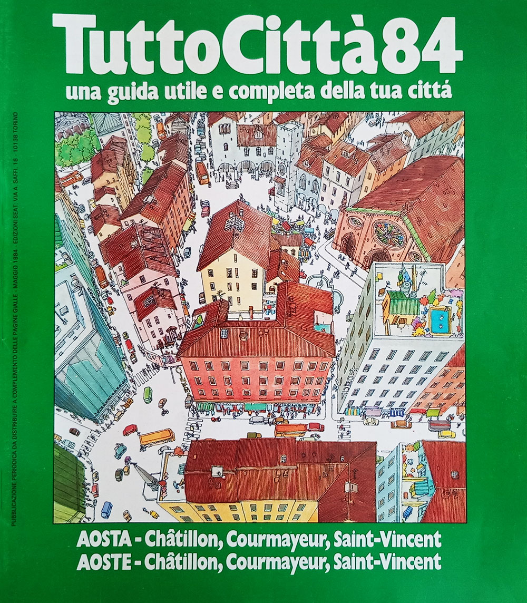 Aosta 84
| |
85/86 | 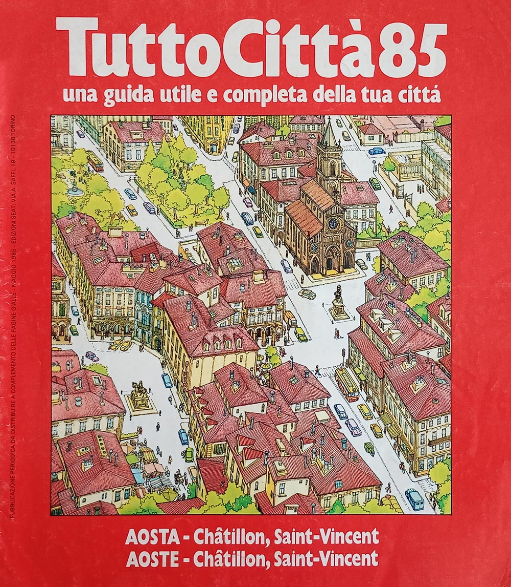 Aosta 85
| |
86/87 | 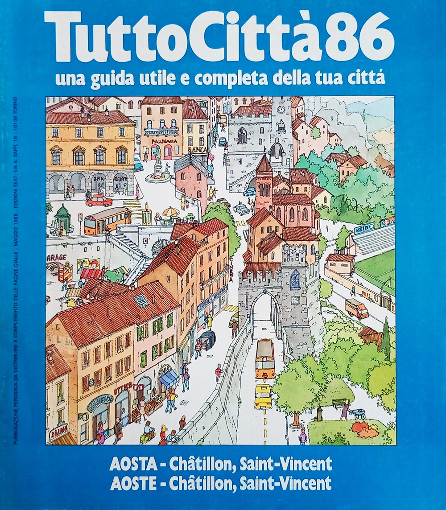 Aosta 86
| |
87/88 | 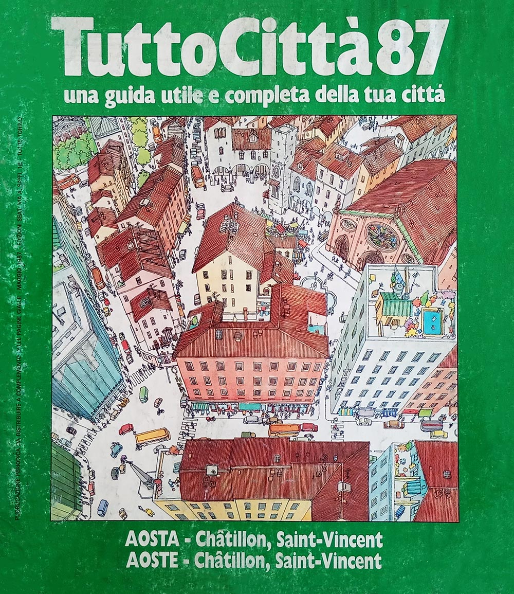 Aosta 87
| |
88/89 | 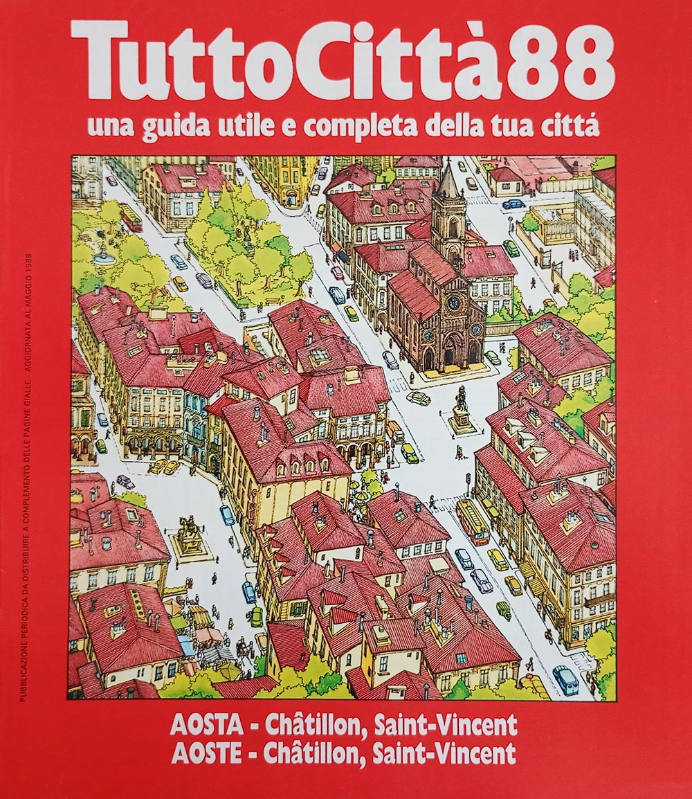 Aosta 88
| |
89/90 | 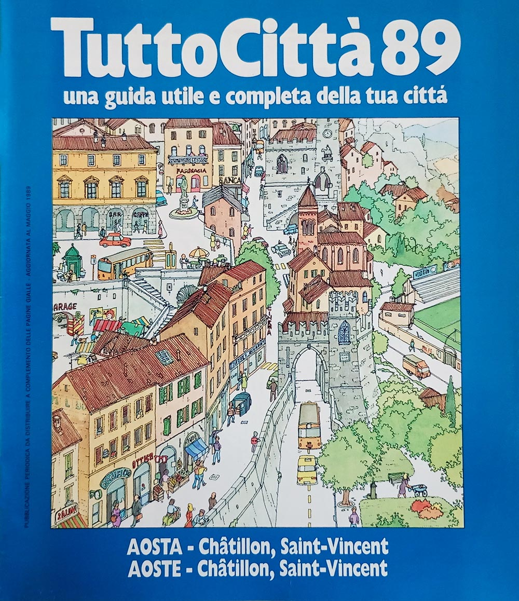 Aosta 89
| |
90/91 | 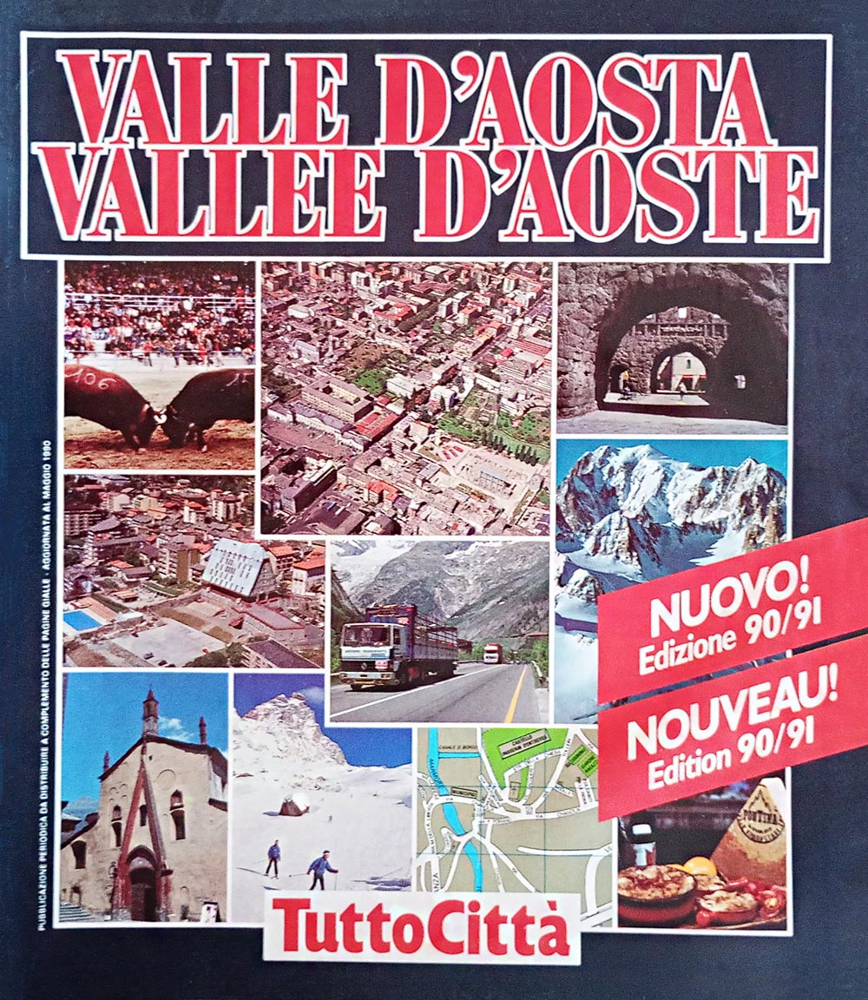 Valle d'Aosta 90/91
| |
91/92 | Valle d'Aosta 91
| |
92/93 | 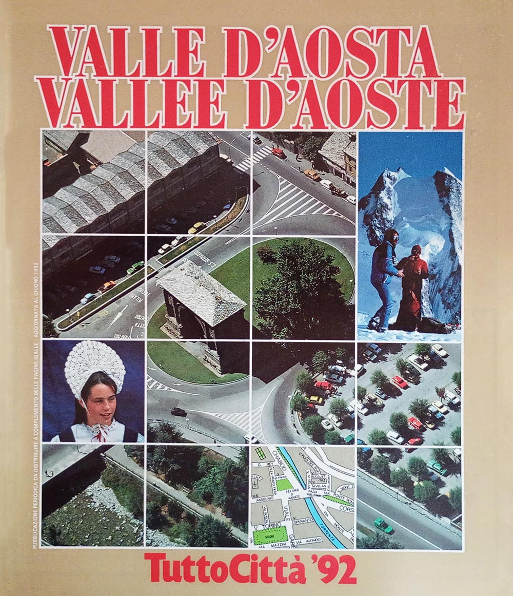 Valle d'Aosta 92
| |
93/94 | 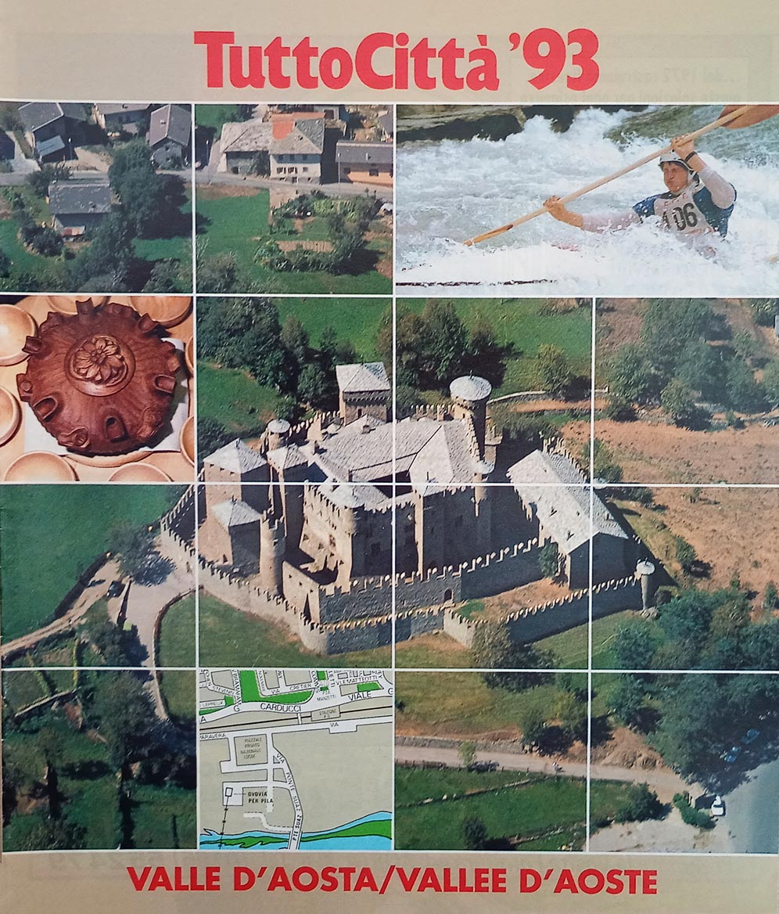 Valle d'Aosta 93
| |
94/95 | Valle d'Aosta 94
| |
95/96 | 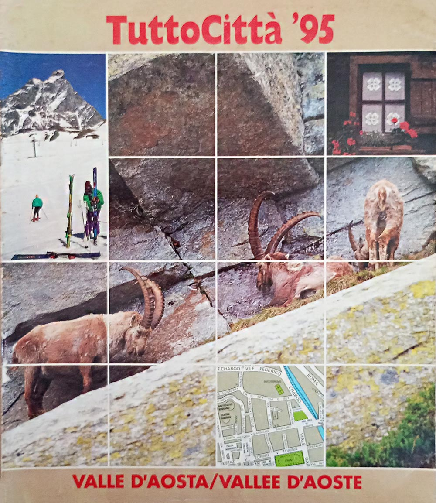 Valle d'Aosta 95
| |
96/97 | 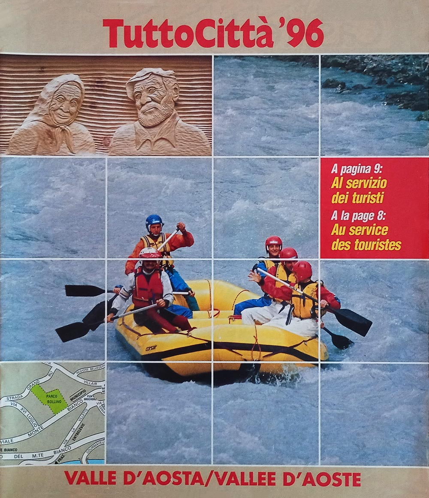 Valle d'Aosta 96
| |
97/98 | 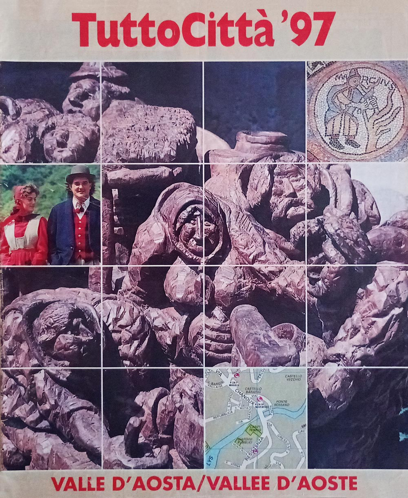 Valle d'Aosta 97
|
{kind=link}
{kind=link}
{kind=link}
{kind=link}
{kind=link}
{kind=link}
{kind=link}
{kind=link}
{kind=link}
{kind=link}
{kind=link}
{kind=link}
Tre layout in diciassette anni
La seguente tabella censisce i vari layout utilizzati per i fascicoli della regione, secondo il sistema definito durante il censimento osservando l'impaginazione; le loro caratteristiche sono descritte in questa pagina. Come descritto anche lì, i cambi di layout non rispettano i cambi delle serie di copertina descritte nell'apposita pagina di questo sito.
| Layout | Annate | Anni di copertina |
|---|---|---|
| TuttoCittà '80 classico | 84/85 – 89/90 | 848586878889 |
| TuttoCittà '90 classico iniziale | 90/91 – 91/92 | 90/9191 |
| TuttoCittà '90 classico | 92/93 – 97/98 | 929394959697 |
Non compaiono le annate 81/82–83/84: il fascicolo non è in raccolta e il layout non è stato accertato.
Le città cartografate
La seguente tabella censisce tutti i comuni che sono stati cartografati nel corso del tempo e per quante annate. Ad ogni riga corrisponde un comune, in ordine alfabetico e non per provincia: lo scopo è infatti identificare a colpo d'occhio quali comuni entrano ed escono dalla cartografia nel corso degli anni. L'unico capoluogo — AOSTA — è in maiuscolo, ma resta al suo posto nell'alfabeto.
La croce segna le annate in cui non sappiamo: perché il fascicolo che avrebbe portato quel comune non è in raccolta, perché non è accertato che sia mai esistito, o perché il suo contenuto non è ancora stato spogliato.
Espandi la griglia delle città — 5 città su 17 annate
| Città | 81/82 | 82/83 | 83/84 | 84/85 | 85/86 | 86/87 | 87/88 | 88/89 | 89/90 | 90/91 | 91/92 | 92/93 | 93/94 | 94/95 | 95/96 | 96/97 | 97/98 |
|---|---|---|---|---|---|---|---|---|---|---|---|---|---|---|---|---|---|
| AOSTA | × | × | × | × | × | ||||||||||||
| Châtillon | × | × | × | × | × | ||||||||||||
| Courmayeur | × | × | × | × | × | ||||||||||||
| Pont-Saint-Martin | × | × | × | × | × | ||||||||||||
| Saint-Vincent | × | × | × | × | × |
Le città cartografate almeno una volta sono 5. Il minimo è nelle annate 85/86–89/90, con 3 città; il massimo nelle annate 92/93, 93/94 e 95/96–97/98, con 5.
I conteggi valgono sulle 12 annate di cui la raccolta ha tutti i fascicoli: altrove sarebbero un minimo spacciato per un totale.
L'indice degli articoli, 1990-1997
Dall'annata 1990/91 ciascuna provincia ha una rubrica di articoli su storia, ambiente ed economia locale — in molti fascicoli sottotitolata «Vivere la città» — che perdura fino all'annata 1997/98. Sono 29 titoli in 8 annate, mai indicizzati altrove: un piccolo corpus di giornalismo locale distribuito gratuitamente in centinaia di migliaia di copie e poi scomparso senza lasciare traccia in alcuna risorsa online.
Per le annate 91/92 e 94/95 i fascicoli non sono in raccolta e l'indice resta in sospeso.
I titoli sono trascritti come compaiono nel fascicolo. Il testo degli articoli non è riprodotto: i diritti appartengono all'editore.
Annata 90/91
- Aosta — italiano
- Anni 90. Un sogno: le Olimpiadi • Identikit della regione • Gli eredi dei Salassi • Cogne. Settant'anni di acciaio • Federico Chabod. La storia e la libertà • Date storiche • La leggenda di una fiera • Le meridiane, il tempo, l'amore • I tempi di Patience • Il mito di Carrel • Quanti segreti nella fontina! • Un trofeo per la regina • La ricetta della nonna
- Aosta — francese
- Le années 1900. Un rêve: les Olympiades • Portrait-robot de la Région • L'héritage des Salasses • Cogne. Soixante-dix ans d'acier • Federico Chabod. Histoire et Liberté • Dates historiques • La légende d'une foire • Les cadrans solaires, le temps, l'amour • Les temps de Patience • Le mythe de Carrel • Combien de secrets autour de la fontine! • Un trophée pour la reine • La recette de Bonne-Maman
Annata 91/92
- Aosta
- in sospeso il fascicolo Valle d'Aosta 91 non è in raccolta
Annata 92/93
- Aosta — italiano
- Il futuro possibile. L'arte di saper vivere nell'isola felice • Voci della cronaca • Traffico da domare per la città del Duemila • Quei castelli difesero l'Italia • L'amore si canta in patois
- Aosta — francese
- Le futur possible. L'art de savoir vivredans l'île heureuse • Les faits divers à la tv et dans les journaux • Circulation à daupter pour l'an 2000 • Ces chateâux défendirent l'Italie • L'amour se chante en patois
Annata 93/94
- Aosta — italiano
- Italia domani. Aosta, voglia di altruismo • Arte in tavola. Scrittoti, poeti e carbonada
- Aosta — francese
- Italie du futur. Aoste, une envie d'altruisme • L'art à table. Les écrivains, les poètes et la carbonada
Annata 94/95
- Aosta
- in sospeso il fascicolo Valle d'Aosta 94 non è in raccolta
Annata 95/96
- Aosta — italiano
- Progetti giovani. Gli sportelli per chi ha buona idee • Le radici della Vallée lungo l'antica "consolare" • Con i Santinumi, dietro le quinte del rock
- Aosta — francese
- Projets jeunes. Voilà les guichets aux bonnes idées • Les racines de la Vallée le long de la "consulaire" • Avec les Santinumi, derrière les coulisses du rock
Annata 96/97
- Aosta — italiano
- Tempo libero. Musica e teatro dopo lo sci • Al servizio dei turisti • Camoscio e tomini, un pranzo da re
- Aosta — francese
- Loisirs. Musique et téâtre après le ski • Au service des touristes • Chamois et tommes fraîches: un dîner de roi
Annata 97/98
- Aosta — italiano
- I mille giochi di Mastro Ciliegia • San Grato contro gli insetti e il mistero di Sant'Orso • Riaperta l'antica strada delle Gallie
- Aosta — francese
- Les mille jeux de Maître Chose • Saint Grat contre les insectes et le mystère de Saint Ours • Rouverture de l'ancienne voie des Gaules
I dati
valle-daosta_fascicoli.csv— un fascicolo per riga: foliazione, layout, formato, copertina, presenza in raccolta e certezza dell'esistenzavalle-daosta_cartografia.csv— un comune per riga e per annata, con la provincia e se compariva nell'elenco delle vievalle-daosta_articoli.csv— un titolo per riga: l'indice delle rubriche provinciali
Chi possiede i fascicoli mancanti e vuole vedere questa pagina completata troverà nelle questioni aperte come contribuire.